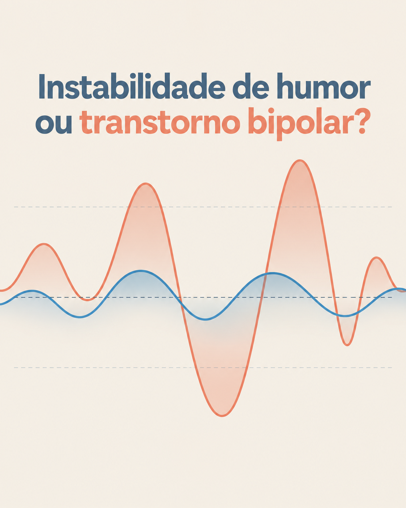

INSTAGRAM — CARROSSÉIS (8)
✓ Já aprovado anteriormente
C01 · 20/10 · Ansiedade normal ou transtorno?
Sentir ansiedade em alguns momentos faz parte da vida. O sinal de atenção aparece quando ela passa a ocupar espaço demais e interfere na rotina.
Este post não serve para fazer um diagnóstico. Ele é um convite para observar a frequência, a intensidade e o impacto do que você sente.
CTA: Salve este post para consultar depois.
✓ Já aprovado anteriormente
C02 · 24/10 · TDAH no adulto nem sempre é hiperatividade
TDAH no adulto nem sempre aparece como inquietação visível. Muitas vezes se manifesta como dificuldade de concluir tarefas, procrastinação, esquecimentos frequentes e sensação de estar sempre atrasado.
Nem toda distração é TDAH, e por isso uma avaliação profissional é o caminho para entender o que está acontecendo.
CTA: Salve este post se você se reconheceu em algum ponto.

✓ Já aprovado anteriormente
C03 · 28/10 · Instabilidade de humor ou transtorno bipolar?
Ter altos e baixos de humor faz parte da vida. O que diferencia o transtorno bipolar é a intensidade, a duração e o impacto dessas variações na rotina, no sono e nas relações.
Este post é informativo. Uma avaliação profissional é o único caminho para um diagnóstico.
CTA: Compartilhe com alguém que pode se beneficiar dessa informação.
✓ Já aprovado anteriormente
C04 · 31/10 · Cansado, mas não consegue dormir?
Estar cansado nem sempre significa conseguir dormir. A dificuldade pode aparecer para pegar no sono, permanecer dormindo ou acordar descansado.
Observar a frequência do problema e o impacto durante o dia ajuda a entender quando é hora de procurar cuidado.
CTA: Salve este conteúdo e observe como tem sido o seu sono nesta semana.
Aguardando aprovação
C05 · 04/11 · Depressão nem sempre é tristeza (anedonia)
A depressão nem sempre aparece como choro ou tristeza visível. Em muitos casos, o sinal é a perda de interesse em coisas que antes davam prazer, mudanças no sono ou dificuldade de sentir motivação.
Reconhecer esses sinais menos óbvios é o primeiro passo para buscar avaliação.
CTA: Marque alguém que pode precisar ler isso.
Aguardando aprovação
C06 · 08/11 · Falta de atenção comum ou TDAH?
Nem toda falta de atenção é TDAH. Dormir mal, alimentação desequilibrada ou sobrecarga de tarefas também afetam a concentração.
Entender a diferença é importante para saber quando vale a pena buscar uma avaliação profissional.
CTA: Salve este post para rever quando precisar.
✓ Já aprovado anteriormente
C07 · 12/11 · Atendimento presencial e online
O cuidado em saúde mental pode acontecer de forma presencial ou online.
O consultório da Dra. Débora Cury atende em Campo Grande-MS e também oferece consultas online para todo o Brasil, sempre com escuta, acolhimento e acompanhamento individualizado.
Dra. Débora Cury · Médica · CRM-MS 9707
CTA: Entre em contato para consultar horários e tirar suas dúvidas.
Aguardando aprovação
C08 · 15/11 · Nem todo paciente chega pronto para falar
Nem todo paciente chega pronto para falar na primeira consulta. E tentar forçar uma conversa pode ser justamente o que impede a confiança de começar.
O tempo de cada pessoa é respeitado, sem pressa e sem julgamento.
CTA: Se você já sentiu isso, saiba que é normal.
INSTAGRAM — REELS (12, roteiro pronto, gravação pendente)

✓ Já aprovado anteriormente
R01 · 21/10 · Burnout ou estresse?
Roteiro: "Estresse e burnout não são a mesma coisa. O estresse pode aparecer diante de uma situação difícil e variar conforme o momento. No burnout, o esgotamento se relaciona ao trabalho e pode vir acompanhado de desmotivação, dificuldade de concentração e sensação de sobrecarga. Se o cansaço persiste e começa a mudar sua rotina, vale buscar uma avaliação."
CTA: Compartilhe com alguém que precisa entender melhor esse tema.
🎬 PILOTO · 100% IA · narração com voz clonada da Dra. Débora
R02 · 23/10 · Diferença entre tristeza e depressão
Roteiro: "Sentir tristeza é uma resposta normal da vida diante de perdas e frustrações. A depressão é diferente: ela persiste, não depende de um motivo claro, e muda o sono, o apetite e a energia por semanas. Perceber essa diferença é o primeiro passo para procurar ajuda."
CTA: Salve este vídeo para rever quando precisar.
Este é o PILOTO do novo formato — vídeo animado + infográfico + narração com a voz da Dra. clonada por IA (modelo Eleven v4). Se aprovar o formato, os outros 10 Reels (R03–R12) seguem neste mesmo molde.
Vídeo não gravado ainda — depende da Dra. Débora
Roteiro pronto · aguarda gravação
R03 · 27/10 · Sinais de alerta para buscar ajuda
Roteiro: "Alguns sinais merecem atenção: mudanças persistentes no sono, isolamento social, perda de interesse em atividades que antes davam prazer, ou dificuldade de concentração que atrapalha o dia a dia. Nenhum sinal sozinho define um diagnóstico, mas juntos eles são um convite a buscar avaliação profissional."
CTA: Compartilhe com alguém que você se preocupa.
Vídeo não gravado ainda — depende da Dra. Débora
Roteiro pronto · aguarda gravação
R04 · 30/10 · Mito: "depressão grave é frescura ou falta de força"
Roteiro: "Depressão profunda não é frescura, falta de força de vontade, ou algo que passa 'se a pessoa se distrair'. Quando chega a um estágio mais grave, o cérebro precisa de cuidado — assim como qualquer outro órgão do corpo precisa de tratamento quando adoece."
CTA: Marque alguém que precisa ouvir isso.
Vídeo não gravado ainda — depende da Dra. Débora
Roteiro pronto · aguarda gravação
R05 · 02/11 · Escuta ativa: o que a Dra. faz numa consulta
Roteiro: "Escutar não é esperar a vez de falar. Na consulta, o objetivo é entender a história de cada pessoa sem pressa, sem julgamento e sem comparar uma dor com a outra. Essa escuta é o ponto de partida para qualquer cuidado."
CTA: Entre em contato para agendar uma consulta.
Vídeo não gravado ainda — depende da Dra. Débora
Roteiro pronto · aguarda gravação
R06 · 05/11 · TDAH e a necessidade de movimento para organizar a mente
Roteiro: "Para algumas pessoas com TDAH, o corpo precisa se mexer para a mente conseguir se organizar. Balançar a perna, andar enquanto pensa, ou mexer em algo com as mãos não é falta de educação — é uma forma de regular a atenção."
CTA: Salve este vídeo se você se reconheceu.
Vídeo não gravado ainda — depende da Dra. Débora
Roteiro pronto · aguarda gravação
R07 · 07/11 · Mitos sobre terapia + medicação juntas
Roteiro: "Terapia e medicação não competem entre si. Em muitos casos, elas se complementam: uma trabalha a compreensão e as estratégias, a outra ajuda a regular o funcionamento do corpo e do cérebro. A decisão de usar uma, outra, ou as duas é sempre individual e definida com acompanhamento profissional."
CTA: Compartilhe se você já ouviu esse mito antes.
Vídeo não gravado ainda — depende da Dra. Débora
Roteiro pronto · aguarda gravação
R08 · 09/11 · Como funciona a primeira consulta (institucional)
Roteiro: "Na primeira consulta, o objetivo é conhecer a história de cada pessoa: como está o sono, o humor, a rotina e o que motivou a busca por ajuda. Não há pressa, nem julgamento. É o início de um acompanhamento construído com confiança."
CTA: Entre em contato para tirar dúvidas sobre horários.
Vídeo não gravado ainda — depende da Dra. Débora
Roteiro pronto · aguarda gravação
R09 · 11/11 · Autocuidado negligenciado por sobrecarga
Roteiro: "É comum cuidar de tudo e de todos e deixar a própria saúde para depois. Mas negligenciar sinais do próprio corpo e mente por muito tempo cobra um preço. Cuidar de si não é luxo, é parte da responsabilidade com quem você ama."
CTA: Marque alguém que precisa se lembrar disso.
Vídeo não gravado ainda — depende da Dra. Débora
Roteiro pronto · aguarda gravação
R10 · 13/11 · Importância do sono na saúde mental
Roteiro: "O sono não é só descanso físico — ele regula humor, memória e capacidade de lidar com o estresse do dia a dia. Dormir mal com frequência pode ser tanto causa quanto sintoma de questões emocionais que merecem atenção."
CTA: Salve este vídeo e observe seu próprio sono esta semana.
Vídeo não gravado ainda — depende da Dra. Débora
Roteiro pronto · aguarda gravação
R11 · 16/11 · TOC: pensamentos intrusivos e medo dos próprios pensamentos
Roteiro: "Para quem convive com o Transtorno Obsessivo-Compulsivo, o sofrimento é muitas vezes silencioso: pensamentos indesejados que geram medo e angústia, seguidos de rituais para tentar neutralizá-los. Não é frescura nem mania — é uma condição tratável."
CTA: Compartilhe para ajudar a desfazer esse estigma.
Vídeo não gravado ainda — depende da Dra. Débora
Roteiro pronto · aguarda gravação
R12 · 18/11 · Luto: por que o alívio emocional vem depois do choro
Roteiro: "Chorar intensamente e, em seguida, sentir uma calma inexplicável é uma resposta natural do corpo ao luto. Não existe prazo certo para elaborar uma perda, e permitir-se sentir é parte necessária do processo."
CTA: Marque alguém que está passando por um momento de luto.
BLOG — 4 ARTIGOS (1 por semana)
Aguardando aprovação
B01 · 22/10 · Ansiedade normal ou transtorno? Como saber a diferença
Artigo aprofundado sobre os critérios que diferenciam ansiedade cotidiana de transtorno de ansiedade, com foco em frequência, intensidade e impacto na rotina. Fecha com convite para avaliação profissional.
Aguardando aprovação
B02 · 30/10 · Burnout x estresse: entenda antes que vire crise
Artigo explicando a diferença clínica entre estresse pontual e síndrome de burnout, sinais de alerta no ambiente de trabalho, e quando procurar ajuda.
Aguardando aprovação
B03 · 06/11 · TDAH no adulto: sinais que passam despercebidos
Artigo sobre como o TDAH se manifesta de forma diferente em adultos (procrastinação, dificuldade de organização, esquecimentos) comparado à imagem popular de hiperatividade infantil.
Aguardando aprovação
B04 · 14/11 · Insônia: quando a dificuldade para dormir pede avaliação
Artigo sobre os diferentes tipos de insônia, impacto na saúde mental, e critérios para saber quando vale buscar acompanhamento profissional.